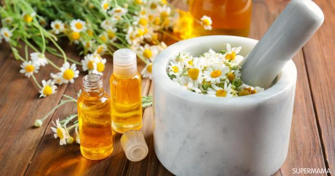
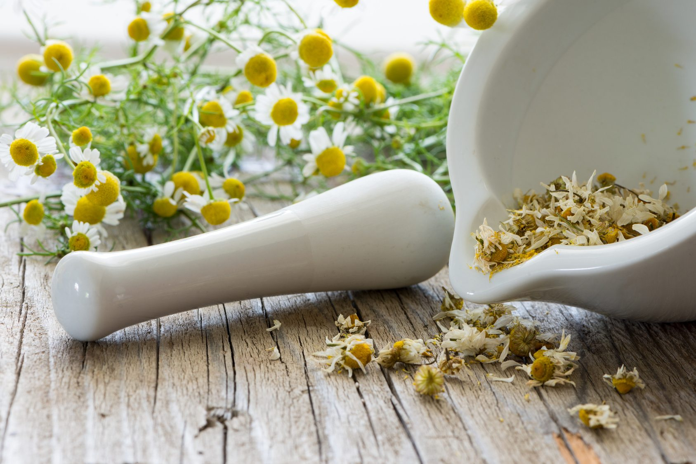

Aceite Esencial de Lavanda 100% Natural
$25.00
Nuestro Aceite Esencial de Lavanda está hecho con flores de lavanda cultivadas de manera orgánica, sin aditivos ni productos químicos.

La Manzanilla: Una Medicina Natural para el Bienestar
$25.00
La manzanilla es una planta medicinal ampliamente utilizada en la medicina natural debido a sus propiedades calmantes y antiinflamatorias.
La Menta: Un Remedio Natural para la Salud Digestiva
$25.00
El Té de Menta, hecho con hojas frescas de menta, es ideal para aliviar malestares digestivos y calmar dolores de cabeza.
Producto mas vendido
Aceite Esencial de Lavanda 100% Natural
$25.00
Nuestro Aceite Esencial de Lavanda está hecho con flores de lavanda cultivadas de manera orgánica, sin aditivos ni productos químicos.